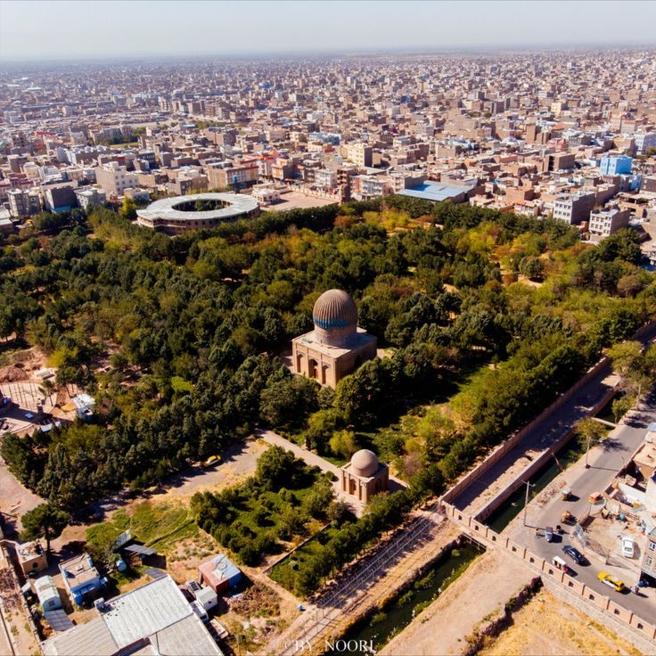

Afghanistan Cities Culture
KABUL
Kabul, where mountains guard stories of resilience and renewal.

Location:
Kabul, the capital city of Afghanistan, lies in the eastern part of the country, surrounded by rugged mountains at an altitude of about 1,790 meters above sea level.
History:
With a history dating back over 3,000 years, Kabul has been a vital cultural and political center along the ancient Silk Road. It flourished during the Timurid era and later under King Amanullah Khan’s reforms.
Ethnic Groups:
The city is ethnically diverse, home to Tajiks, Pashtuns, Hazaras, Qizilbash, and others.
Languages:
Dari (Persian) and Pashto are widely spoken, with Dari being the dominant urban language.
Famous Dishes:
Kabuli Pulao is the national dish, rich with raisins, carrots, and lamb. Other popular dishes include Mantu and Ashak dumplings.
Traditions and Customs:
Kabul hosts both national and local festivals like Nowruz. Traditional music with instruments like the rubab and dambura is deeply rooted in the city’s cultural gatherings.
Notable Landmarks:
- Babur's Gardens
- Pul-e Kheshti Mosque
- Asmayee Mountain (TV Hill)
- The Old City Bazaars
.jpg)
Darulaman Palace

Shah Doshamshira Mosque

City View-Kabul

City View-Kabul
HERAT
Herat, the poetic soul of Afghanistan rich with history and art

Location:
Herat lies in western Afghanistan near the Iranian border, known for its mild climate and historical significance.
History:
An ancient city over 2,500 years old, Herat thrived during the Timurid dynasty as a world-renowned center for art, architecture, and literature, especially under the rule of Queen Goharshad.
Ethnic Groups:
Primarily inhabited by Tajiks, with smaller Pashtun and Hazara communities.
Languages:
Dari (Persian) is the dominant language, with a local Herati accent known for its elegance.
Famous Dishes:
Herati Qabili, Goshefil with yogurt, and traditional Sangak bread are local favorites.
Traditions and Customs:
Herat is famous for its poetry nights, storytelling circles, calligraphy, miniature painting, and tile art passed down through generations.
Notable Landmarks:
- Herat Grand Mosque
- Goharshad Mausoleum
- Qala Ikhtiyaruddin Citadel
- Historic Herat Bazaar
.JPG)
Qalaa Ikhtiyaruddin-Herat

Goharshad Tomb-Herat

Minarets Heart

City View-Herat
MAZAR-E-SHARIF
Mazar-e-Sharif, where blossoms and belief intertwine beneath the blue dome.

Location:
Located in northern Afghanistan, Mazar-e-Sharif is the capital of Balkh province, nestled in fertile plains with a moderate climate.
History:
Renowned for housing the Blue Shrine (Rawze-e-Mubarak), believed by many to be the resting place of Imam Ali. The city shares deep historical ties with the ancient city of Balkh.
Ethnic Groups:
Home to Pashtuns, Tajiks, Uzbeks, and Turkmens, creating a rich cultural mix.
Languages:
Dari (Persian), Pashto, Uzbeki, and Turkmeni are spoken, reflecting the city’s diversity.
Famous Dishes:
Mantu dumplings, Bajeh (organ stew), Qabili Pulao, and local flatbreads are popular.
Traditions and Customs:
Mazar is famous for its grand Nowruz celebrations, especially the Jahenda Bala (flag-raising) ceremony at the shrine. Seasonal fairs, flower markets, and spiritual music play an important role in daily life.
Notable Landmarks:
- Blue Mosque (Shrine of Ali)
- Rose Gardens and Flower Parks
- Mazar Grand Bazaar
- Local artisan markets
.jpg)
Rawze-e-Mubarak

Rawze-e-Mubarak

City View-Mazar-e-Sharif

City View-Mazar-e-Sharif
BAMYAN
Bamyan, where silence speaks through valleys and ancient stone guardians.

Location:
Situated in central Afghanistan, Bamyan lies high in the Hindu Kush mountains, with breathtaking landscapes and peaceful valleys.
History:
Once a key hub on the Silk Road, Bamyan is famous for the colossal Buddha statues carved into the cliffs in the 6th century — tragically destroyed in 2001 but still a symbol of Afghanistan’s rich Buddhist past.
Ethnic Groups:
Predominantly inhabited by the Hazara community.
Languages:
Dari is widely spoken, with distinct local accents in rural areas.
Famous Dishes:
Shola, Qabuli Pulao, Kachri Quroot (yogurt-based dish), and dry flatbread are typical.
Traditions and Customs:
Traditional festivals include the Red Flower Festival in spring, community weaving of carpets, and winter storytelling around fires. Many customs center on resilience and collective spirit.
Notable Landmarks:
- Buddha Cliff Ruins
- Band-e Amir National Park
- Painted Caves of Bamyan
- Shrine of Khwaja Ali Bamiani
.JPG)
Bamyan Cultural Bazaar

City View-Bamyan

Band-e Amir, Bamyan
Band-e Amir, Bamyan